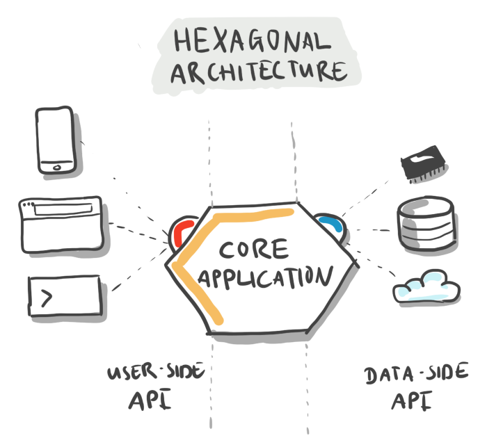

Functional Centered Design
Jan Hauer
28. Oktober 2020
Agenda
- Motivation
- Paradigmen
- Hexagonal-Architecture
- Functional Pattern
Ihr Referent

Jan Hauer
Manager
Java Enterprise Solutions
Jan.Hauer@EXXETA.com
 @hauer-io
@hauer-io
Microservices
Paradigma
https://github.com/hauer-io/jfun
Überblick
// Prozedual
for(Duck duck: DUCKS){
eat(duck.stomach, Apple);
print(duck);
}
// Objekt-Orientiert
for(Duck duck: DUCKS){
duck.eat(Apple);
print(duck);
}
//Funktional
DUCKS.stream()
.map(duck -> new Duck(duck.name, new Stomach(duck.stomach.content.append(Apple))))
.forEach(DuckApp::print);
Vergleich
| Seiteneffekte | Daten & Funktionalität | |
|---|---|---|
| Prozedual | Ja | Getrennt |
| Object-Orientiert | Ja | Gemeinsam |
| Funktional | Nein | Getrennt |
Platz + Kombination fehlt
Vergleich
| Seiteneffekte | Daten & Funktionalität | |
|---|---|---|
| Prozedual | Ja | Getrennt |
| Object-Orientiert | Ja | Gemeinsam |
| Funktional | Nein | Getrennt |
| Fun-00 | Nein | Gemeinsam |
Fun-OO
https://github.com/hauer-io/jfun
Funktionale Prinzipien
- Sequenzen statt Schleifen
- Keine Seiteneffekte
- Kein Kontrollfluss durch Exceptions
Maven Dependencies
// Java
<dependency>
<groupId>com.oath.cyclops</groupId>
<artifactId>cyclops</artifactId>
<version>10.4.0</version>
</dependency>
// Kotlin
<dependency>
<groupId>io.arrow-kt</groupId>
<artifactId>arrow-core</artifactId>
<version>0.11.0</version>
</dependency>

Monade
@FunctionalInterface
public interface Monade<T> {
<T> Monade<T> empty();
<R> Monade<R> map(Function< ? super T, ? extends R> fun);
<R> Monade<R> flatMap(Function< ? super T, ? extends Monade<R>> fun);
}Beispiel: Optional
public class java.util.Optional<T> implements Monade<T> {
<T> Optional<T> empty() {
return Option.empty();
}
<R> Optional<R> map(Function< ? super T, ? extends R> fun) {
return this.isEmpty() ? empty() : ofNullable(fun.apply(this.value));
}
<R> Optional<R> flatMap(Function< ? super T, ? extends Optional<R>> fun){
return this.isEmpty() ? empty() : fun.apply(this.value);
}
}Beispiel: List
public class java.util.List<T> implements Monade<T> {
<T> List<T> empty() {
return List.of();
}
<R> List<R> map(Function< ? super T, ? extends R> fun) {
return this.isEmpty() ? empty() : ofNullable(fun.apply(this.value));
}
<R> List<R> flatMap(Function< ? super T, ? extends List<R>> fun){
return this.isEmpty() ? empty() : fun.apply(this.value);
}
}Weitere Beispiele
- java.util.stream.Stream
- cyclops.control.Eval
- cyclops.control.Maybe
- cyclops.control.LazyEither
- cyclops.control.Try
Design
https://github.com/hauer-io/jfun
Zusammenfassung
- Einfache Testbarkeit (keine Integrationstest)
- Klare API (Either/Try)
- Performance schonend (Lazyness)